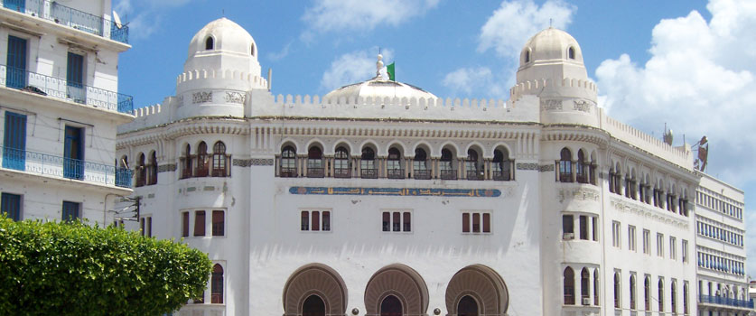

 La casbah d'Alger, communément appelée la Casbah (en arabe : القصبة, Al-qaṣabah, « la citadelle »), correspond à la vieille ville ou médina d'Alger, capitale de l'Algérie, dont elle forme un quartier historique inscrit au patrimoine mondial de l'humanité de l'Unesco depuis 1992. Administrativement, elle est située dans la commune de Casbah, au sein de la wilaya d'Alger.
Son histoire remonte à l'Antiquité, où elle est d'abord un port punique, puis berbère et enfin romain. Fondée au xe siècle par les Berbères sous la dynastie des Zirides, elle est ensuite enrichie par les apports des autres dynasties berbères qui dominent successivement le Maghreb central. Elle atteint son apogée durant la période de la régence d'Alger, de laquelle elle est le siège du pouvoir politique. Colonisée par les Français en 1830, elle est progressivement marginalisée car les centres de pouvoir sont déplacés vers la nouvelle ville. Elle occupe un rôle central pendant la guerre d'Algérie, servant de bastion aux indépendantistes du FLN. À l'indépendance du pays, en 1962, elle ne retrouve pas son rôle central et redevient un espace marginalisé de la ville.
Exemple d'architecture islamique et d'urbanisme des médinas arabo-berbères, elle est aussi un symbole de la culture algérienne, un objet d'inspiration artistique et le siège d'un savoir-faire artisanal ancestral. Des acteurs locaux se battent pour faire vivre son patrimoine matériel et immatériel.
La casbah d'Alger, communément appelée la Casbah (en arabe : القصبة, Al-qaṣabah, « la citadelle »), correspond à la vieille ville ou médina d'Alger, capitale de l'Algérie, dont elle forme un quartier historique inscrit au patrimoine mondial de l'humanité de l'Unesco depuis 1992. Administrativement, elle est située dans la commune de Casbah, au sein de la wilaya d'Alger.
Son histoire remonte à l'Antiquité, où elle est d'abord un port punique, puis berbère et enfin romain. Fondée au xe siècle par les Berbères sous la dynastie des Zirides, elle est ensuite enrichie par les apports des autres dynasties berbères qui dominent successivement le Maghreb central. Elle atteint son apogée durant la période de la régence d'Alger, de laquelle elle est le siège du pouvoir politique. Colonisée par les Français en 1830, elle est progressivement marginalisée car les centres de pouvoir sont déplacés vers la nouvelle ville. Elle occupe un rôle central pendant la guerre d'Algérie, servant de bastion aux indépendantistes du FLN. À l'indépendance du pays, en 1962, elle ne retrouve pas son rôle central et redevient un espace marginalisé de la ville.
Exemple d'architecture islamique et d'urbanisme des médinas arabo-berbères, elle est aussi un symbole de la culture algérienne, un objet d'inspiration artistique et le siège d'un savoir-faire artisanal ancestral. Des acteurs locaux se battent pour faire vivre son patrimoine matériel et immatériel.
Le jardin d'essai du Hammaa, situé dans le quartier du Hamma à Alger, est un jardin luxuriant, qui s'étend en amphithéâtre, au pied du musée national des Beaux-Arts, de la rue Mohamed Belouizdad à la rue Hassiba Ben Bouali, sur une superficie de 32 hectares.
Crée en 1832, il est considéré comme l'un des jardins d'essai et d'acclimatation les plus importants au monde. L'aile ouest du Jardin est occupée par le Jardin français, bordé de washingtonias. Il est séparé de l'ancien jardin situé plus à l'est par l'allée des platanes, perpendiculaire à la route comme l'allée des dragonniers et l'allée des ficus, coupées elles-mêmes de nombreuses allées parallèles à la route dont les deux principales sont l'allée des bambous et l'allée des palmiers. Une allée circulaire au sud-est, l'allée des cocos, contourne le Jardin anglais doté d'un petit lac avec plantes aquatiques. Plusieurs sculptures en pierre d'Émile Gaudissard ornent les allées.
À l'extrémité nord de l'allée des dragonniers se situe le Jardin zoologique qui rassemble des spécimens de la faune d'Afrique du Nord et quelques animaux sauvages.
La mosquée Ketchaoua (en arabe : جامع كتشاوة), est une mosquée historique faisant partie du patrimoine classé de la basse casbah d'Alger. Elle est le symbole de l'histoire de la capitale algérienne. Construite en 1436, elle aurait été massivement remaniée au xviiie siècle sous le gouvernement du dey Hassan. Elle le sera à nouveau en 1846, après sa réquisition en 1832, pour être affectée au culte catholique durant la période coloniale sous le nom de cathédrale Saint-Philippe, qu'elle conservera jusqu'à l'indépendance de l'Algérie en 1962, date à laquelle elle est redevenue une mosquée. Elle est classée, avec l'ensemble de la casbah (la médina d'Alger), au patrimoine mondial par l'UNESCO. La façade actuelle est l'œuvre de l'architecte français Albert Ballu.
La Grande Poste d'Alger est un édifice de style néo-mauresque, construit à Alger en 1910 par les architectes Jules Voinot et Marius Toudoire, qui abrite les services de la poste algérienne au cœur de la ville d'Alger en Algérie. La Grande Poste d'Alger est située au cœur d'Alger. Elle est le principal repère touristique d'Alger-Centre. La Grande Poste a été construite à l'emplacement d'une église anglicane construite en 1870.
") Le mémorial du Martyr, sanctuaire du Martyr ou Maqam E’chahid (en arabe : مقام الشهيد) est un monument aux morts surplombant la ville d'Alger, érigé en 1982 à l'occasion du 20e anniversaire de l'indépendance de l'Algérie (5 juillet 1962), en mémoire des chahids, les combattants de la guerre d'indépendance algérienne morts pour la libération du pays.
Le monument, d'une hauteur de 92 mètres, construit selon une maquette de l’artiste peintre Bachir Yellès qui a imaginé trois palmes stylisées représentant les trois « révolutions culturelle, agraire et industrielle », ou devant symboliser trois périodes de l'histoire de l'Algérie : la résistance à l'occupation et la colonisation, la guerre de libération nationale, le présent et le futur du pays, est composé de trois feuilles de palmier stylisées en béton qui se rejoignent à mi-hauteur (47 mètres). Les palmes soutiennent un ensemble de cinq étages parmi lesquels quatre sont réservés aux installations techniques tandis que le cinquième, surmonté d'une tourelle de style islamique d'un diamètre de 10 mètres, d'une hauteur de 25 mètres et surmontée d'un dôme de 6 mètres.
Le mémorial du Martyr, sanctuaire du Martyr ou Maqam E’chahid (en arabe : مقام الشهيد) est un monument aux morts surplombant la ville d'Alger, érigé en 1982 à l'occasion du 20e anniversaire de l'indépendance de l'Algérie (5 juillet 1962), en mémoire des chahids, les combattants de la guerre d'indépendance algérienne morts pour la libération du pays.
Le monument, d'une hauteur de 92 mètres, construit selon une maquette de l’artiste peintre Bachir Yellès qui a imaginé trois palmes stylisées représentant les trois « révolutions culturelle, agraire et industrielle », ou devant symboliser trois périodes de l'histoire de l'Algérie : la résistance à l'occupation et la colonisation, la guerre de libération nationale, le présent et le futur du pays, est composé de trois feuilles de palmier stylisées en béton qui se rejoignent à mi-hauteur (47 mètres). Les palmes soutiennent un ensemble de cinq étages parmi lesquels quatre sont réservés aux installations techniques tandis que le cinquième, surmonté d'une tourelle de style islamique d'un diamètre de 10 mètres, d'une hauteur de 25 mètres et surmontée d'un dôme de 6 mètres.
 Notre-Dame d'Afrique est une basilique catholique située à Bologhine, quartier/commune d'Alger, en Algérie.
Une statuette en bronze de la Vierge Marie, copie d'une œuvre originale créée par Bouchardon en 1750, fut offerte en mai 1840 à Mgr Dupuch, premier évêque d'Alger. Elle fut placée au monastère de la Trappe de Staouëli à Bouchaoui.
Notre-Dame d'Afrique est une basilique catholique située à Bologhine, quartier/commune d'Alger, en Algérie.
Une statuette en bronze de la Vierge Marie, copie d'une œuvre originale créée par Bouchardon en 1750, fut offerte en mai 1840 à Mgr Dupuch, premier évêque d'Alger. Elle fut placée au monastère de la Trappe de Staouëli à Bouchaoui.
À la suite de la définition du dogme de l'Immaculée Conception par le pape Pie IX le 8 décembre 1854, son successeur, Mgr Pavy, décide d'édifier une grande église de pèlerinage à Notre-Dame. Il déplace la statue dans une chapelle, inaugurée le 20 septembre 1857. La fête de Notre-Dame d'Afrique se tient le 30 avril.
Mgr Pavy, d’origine lyonnaise, entendait édifier « un autre Fourvière, auprès d’Alger ! » Il engage, le 20 février 1858, la construction de l’église. Elle est confiée à Jean-Eugène Fromageau, qui était architecte en chef des édifices diocésains de l'Algérie. Elle fut achevée en 1872. Mgr Pavy, décédé en 1866, est inhumé dans le chœur. L'édifice fut consacré le 2 juillet 1872, par Monseigneur Lavigerie, archevêque d’Alger. Il y transféra la statue de Marie le 2 mai 1873. Elle accueille le 4 mai 1873 un « concile provincial d’Afrique », rassemblant les évêques et abbés d’Algérie, première réunion de ce type pour les temps modernes. Toutes deux fondées sur l’impulsion du cardinal Lavigerie, la Société des missionnaires d'Afrique (Pères blancs) (1868) et les Sœurs missionnaires de Notre-Dame d'Afrique ou Sœurs Blanches (1869) se voient confier la garde du sanctuaire. Le pape Pie IX accorde à l’église le titre de basilique ; elle est consacrée le 30 avril 1876.